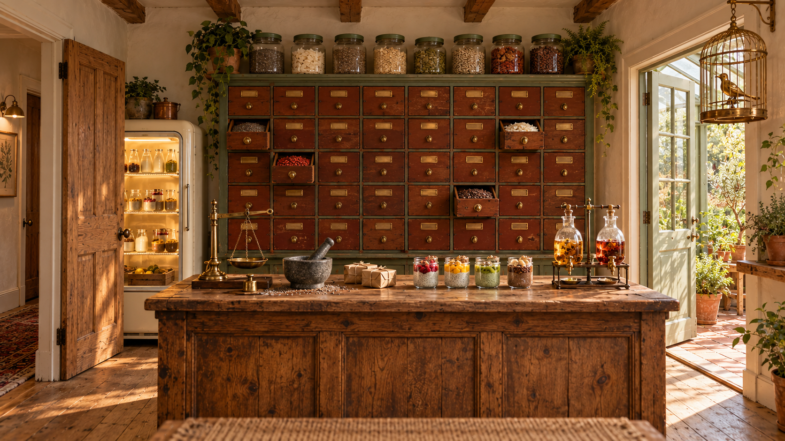

01 · Main room concept. Click any image for its full-resolution PNG.
The shop inside the Inn
Use one coherent Blender room: rear drawers, front lane window, hallway/fridge on one side and glasshouse connection on the other. Dedicated02 governs pale milk contents;05 governs a just-ajar hallway door. The small generated dial is schematic: reuse the existing shared nine-station flat plate and pointer.
The things visitors discover
07 is the complete two-pan balance reference.08/10 define the mechanical bird and cage. These are concept references, not geometrically registered panorama faces or manufacturing drawings.
Blank plates, wrapping paper & an optional floor
The repeats, checked together
Both repeats were visually inspected. The first floor texture’s baked edge shadow was removed. Fine surface microtexture is not mathematically periodic; add the final shader, tile edges and grout in Blender. Repeat checks.
One glazed connection, shared by both rooms
The latest brief changes the Chiapothecary/glasshouse connecting door to glazed oak with clear upper panes and modest lower timber panels. The separate hallway door remains four-panel oak. Shared notes have been updated; existing glasshouse artwork and Blender geometry have not been re-rendered. Door continuity note.
The existing village lane

These ten files are unchanged copies of the Sweet Spells set. No new lane was generated for this room.
Each file was checked byte-for-byte against its source. The previous sampled0–2pixel alignment limits still apply. Reuse manifest · Alignment report.